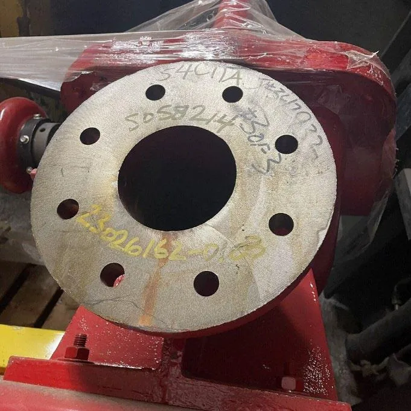
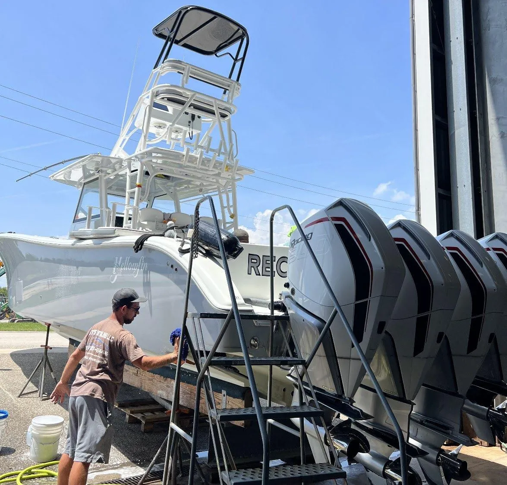
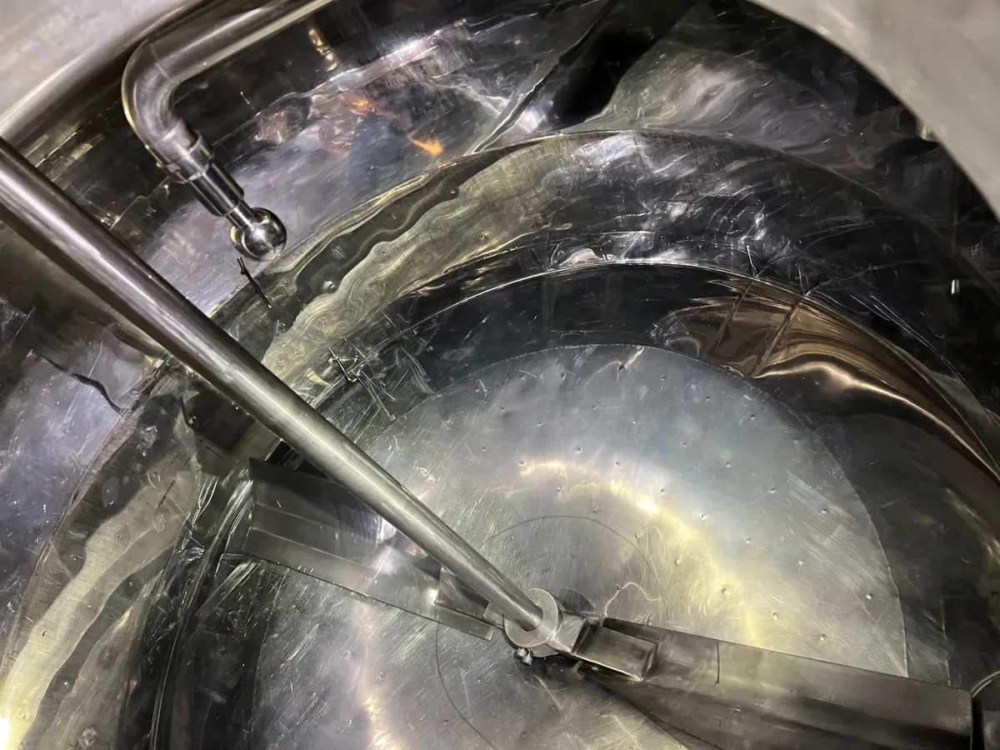

Oil & Gas
Descale, derust, and degrease rigs, terminals, and pipeline assets while reducing acid-fume, solvent-storage, and hazmat-freight friction.

View fitStart with the job buyers already know: acid cleaning, caustic cleaning, degreasing, scale control, exterior maintenance, loop fluid, or water treatment. VertKleen maps the switch to the proof and paperwork each industry expects.
Start with the buying motion, then drill into industry details when the job needs more context.
Descale, derust, and degrease rigs, terminals, and pipeline assets while reducing acid-fume, solvent-storage, and hazmat-freight friction.

View fitWash, brighten, and degrease vessels where confined air, soft metal, salt, and corrosion make chemistry selection critical.

View fitHeavy-duty cleaning for extrusion, processing, warehousing, and plant maintenance teams that need production restored with lower HazCom overhead.
 View fit
View fit
CIP/SIP, hoods, floors, drains, and tanks, with CR and HCR proof from brewery and distillery workflows.

View fitClean, passivate, and maintain water systems in occupied buildings where fume events, shutdowns, and patient-area disruption carry real operational cost.
 View fit
View fit
Concrete cleaning, equipment maintenance, rust removal, and site cleanup on active jobs with simpler storage and lighter exposure risk.
 View fit
View fit
MASEST routes SAM.gov, CAGE 0B2Q3, and NAICS 424690 procurement files for federal, state, local, and public-facility buyers.
 View fit
View fit
K-12 and university facilities can clean and treat systems with students, faculty, and staff on campus. Brevard County Schools proof sits behind the pitch.
 View fit
View fit
Cooling tower programs with WaterSafe60 inhibitor, Purgo minimum-risk antimicrobial support, HCR passivation, CR pH control, and ASHRAE 188 documentation.
View fit
Water lines, fixtures, water heaters, and drains cleared of scale and calcium without hydrochloric acid handling, with metal compatibility reviewed for occupied-building work.
A cross-section of VertKleen at work. The full case record lives on the proof page.
MASEST can support minimum-risk products, footnoted program components, controllers, feed equipment, startup, distributors, and white-label routes.
Become a Distributor